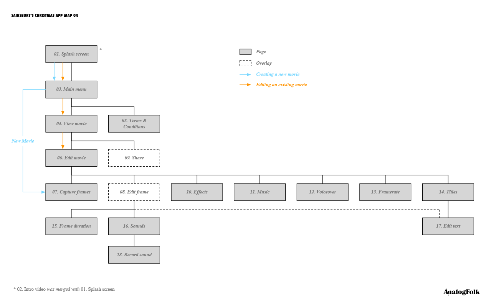
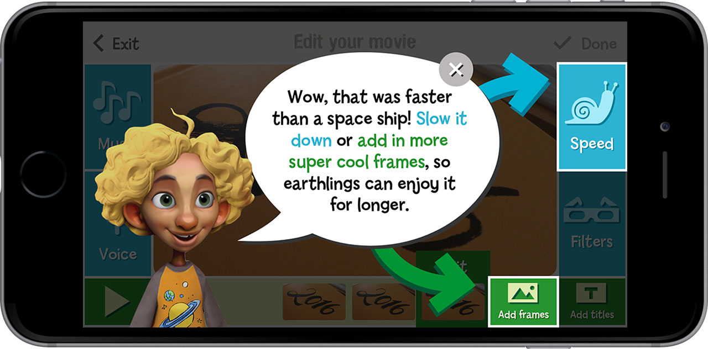

Sainsbury's Story Studio
A kids stop-motion movie app for the supermarket’s 2016 Christmas campaign

Every year, UK brands compete to create the most memorable Christmas ad. In 2016 Sainsbury’s pulled out all the stops for The Greatest Gift: three and a half minutes of stop-motion animation and a soundtrack by Bret McKenzie and James Corden.
In Sainsbury’s stores across the UK, fans could buy a gift box including pop-out characters and sets from the ad. We created a bespoke stop-motion movie app for iOS and Android, empowering children to create their own masterpieces in the world of The Greatest Gift – and beyond!
Discovery
How do you design for kids?
I didn’t know!
I started by researching best practice, and put together a list of twelve design principles which informed all of our subsequent decisions. Here are a few of my favourites:
- Let them be experts
They don’t read instructions, so teach with post-failure messaging instead of up-front directions. - Give pleasant surprises
Add easter eggs: unexpected delights like the pull-down-to-refresh animation on Snapchat. - Be playful
Kids are already playful. We have to give them the opportunity to be playful in our app. Invite them to be silly.
We asked some colleagues to bring their kids to work, so we could observe children using competitor apps. I wanted to understand what kids were capable of and how quickly they would grasp the necessary concepts, like sequentially building a movie frame by frame.
Though some of the children were younger than the target age group, I was pleasantly surprised to see how quickly they reached understanding and created something. Thus I realised early that designing for children did not mean dumbing down.
Defining a feature set
I conducted competitor analysis to see what else was out there and find opportunities to differentiate our app.
Based on this research, the tech lead, visual designer, and I performed a sorting exercise to group the many potential features into unnecessary, nice-to-have, and must-have categories.
Design
Outlining the app
I fleshed out list of features with an app map to ensure the number of views we were planning was within scope, and to establish an early model of the user journey.
When I had explored most features in sketch form, I put together a rough wireflow to demonstrate the direction to other stakeholders.
When most elements were in place, I created a click-through wireframe in Axure RP to approximate dimensions for UI elements and test page transition animations.
Sweating the details
I worked very closely with the visual designer as she developed my sketches and wireframes into visual comps ready for development.
We pursued a colourful, playful visual style that deliberately avoided associations with the Christmas ad, so the app could be continually supported and used in subsequent campaigns.
Following our principle to “give pleasant surprises”, we took pleasure in adding little flourishes too. For example, when setting frame rate to maximum, denoted by a rocket icon at the top end of the slider, the rocket will shake and smoke as if it about to take off.
Bridging the development-design gap
We were working with an overseas development team, so it was crucial to ensure requirements were understood by everyone. I wrote a 27 page functional specification as a key reference for the devs, we held frequent calls, and communicated over Slack to work out the fine details.
Outcomes
Focusing on what’s important
Based on the competitor research and user observation, I established a new model: where other apps ask you make decisions before you start, like naming the film and choosing a title card, in Story Studio you start making the movie immediately.
The UI is literally centred around the movie, with the surrounding controls changing to suit the mode. Apply a filter, see it on the movie. Change the framerate, see the movie at that speed.
“Somebody stole my banger!”
To get the creative juices flowing, the app comes preloaded with an unfinished movie, making use of the sets and characters found in The Greatest Gift box set: Banger the dog has stolen Dad’s Christmas snack and is causing havoc in the living room – what happens next?!
We scripted the video to showcase core features like title cards, sound effects, and background music. It also satisfied our principle to be playful. It’s an invitation to be silly and get creative with the box set.
Learning by doing
One of our design principles said to avoid boring kids with up-front lessons; let them make mistakes, and use those as teaching opportunities. We identified five such opportunities, each triggering a tip explaining what happened and how to fix it.
